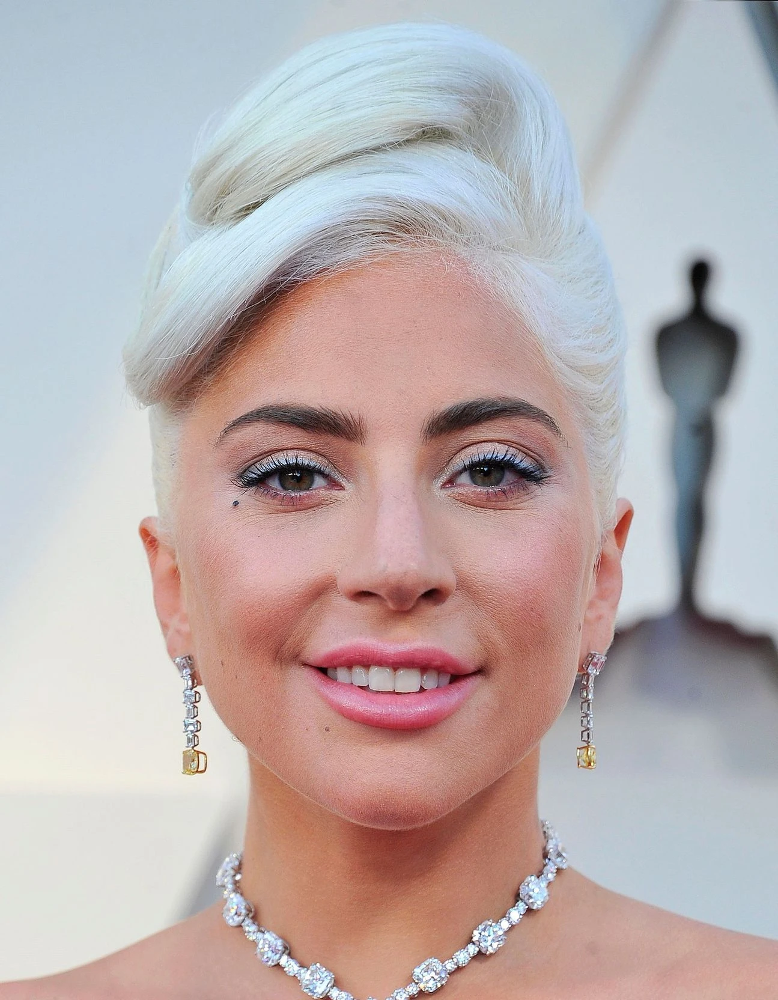

Lady Gaga

Elle est reconnue pour ses excentricités,
ses performances et ses vidéoclips.
Ses ventes de disques à travers le monde sont estimées en 2014 à 200 millions, 30 millions d'albums et près de 170 millions de singles selon Billboard. Ses récompenses incluent 13 Grammy Awards et 18 MTV Video Music Awards
- RedOne (Nadir Khayat), producteur de plusieurs de ses premiers succès comme "Just Dance", "Poker Face", et "Bad Romance".
- BloodPop(Michael Tucker), qui a travaillé avec elle sur l'album "Chromatica".
- Mark Ronson, producteur et compositeur qui a collaboré avec elle sur l'album "Joanne".
Slalow sur spotify